TRANG CHỦ
Màn hình trang chủ
Trang chủ cung cấp cái nhìn tổng quan về hệ thống giám sát, hiển thị trực quan các khu vực đã lắp đặt camera như biển và trạm biến áp trên bản đồ. Tại đây, người dùng có thể nhanh chóng theo dõi các thông số quan trọng như: tổng số camera, số điểm giám sát và số lượng cảnh báo mới nhất. Các con số hiển thị cạnh tên khu vực/trạm biểu thị số lượng cảnh báo hiện có tại địa điểm đó.
Lưu ý:
-
-Thông tin về nhiệt độ môi trường hiện đang trong quá trình phát triển.
- Người dùng có thể đổi màu nền web bằng cách nhấn vào nút
 ở góc trên bên phải.
ở góc trên bên phải.

Sơ đồ 1 sợi
Người dùng có thể xem sơ đồ 1 sợi bằng cách nhấp vào tên các trạm như SĐ1S_Liên Trì hoặc Trạm 110kV Nam Phú Quốc. Khi di chuột vào từng điểm đo trên sơ đồ,các thông số nhiệt độ min, max và trung bình sẽ được hiển thị. Đặc biệt, hệ thống sẽ tự động đổi màu các điểm đo sang vàng hoặc đỏ nếu có cảnh báo, giúp bạn dễ dàng nhận diện tình trạng trạm một cách trực quan.
Lưu ý: Trạm nào chưa có sơ đồ 1 sợi thì khi ấn sẽ không hiện ra sơ đồ.

Nếu muốn xem chi tiết, người dùng chỉ cần nhấn vào biểu tượng  trên sơ đồ. Trang web sẽ hiển thị bảng thông
số chi tiết giúp theo
dõi kỹ hơn về tình trạng các thiết bị, so sánh nhiệt độ của thiết bị đó với pha min,
nhiệt độ môi trường và pha min của toàn trạm.
trên sơ đồ. Trang web sẽ hiển thị bảng thông
số chi tiết giúp theo
dõi kỹ hơn về tình trạng các thiết bị, so sánh nhiệt độ của thiết bị đó với pha min,
nhiệt độ môi trường và pha min của toàn trạm.

Với các thiết bị có giám sát phóng điện, trên sơ đồ còn xuất hiện biểu tượng tia sét ⚡. Màu biểu tượng tia sét sẽ thể hiện mức đánh giá xấu nhất trong các bộ phận của thiết bị đang giám sát; nếu quá 15 phút không có lần đo mới, biểu tượng tia sét sẽ tự động chuyển về màu xanh.
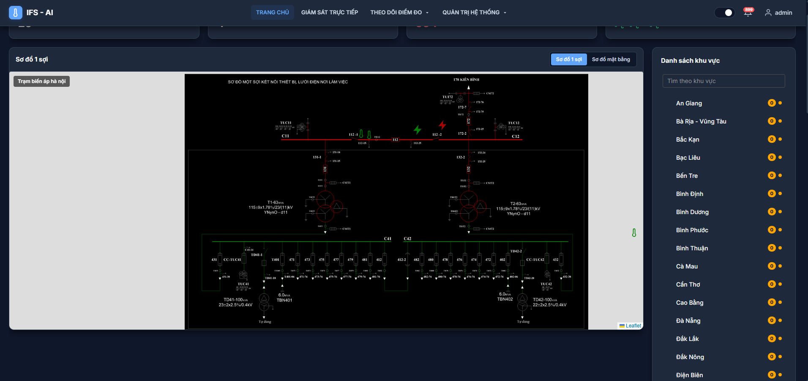
Di chuột vào biểu tượng tia sét, hệ thống hiển thị thông số các bộ phận cùng cường độ phóng điện (dB) đo được.
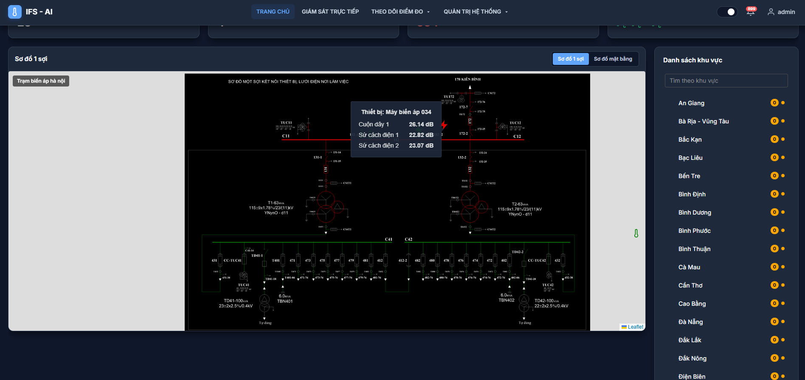
Bấm vào biểu thượng tia sét sẽ mở bảng thông số chi tiết của từng bộ phận: cường độ đo được, mức đánh giá, ΔPD%/kỳ, Camera quan sát được, Vùng trên camera và thời điểm đo gần nhất.
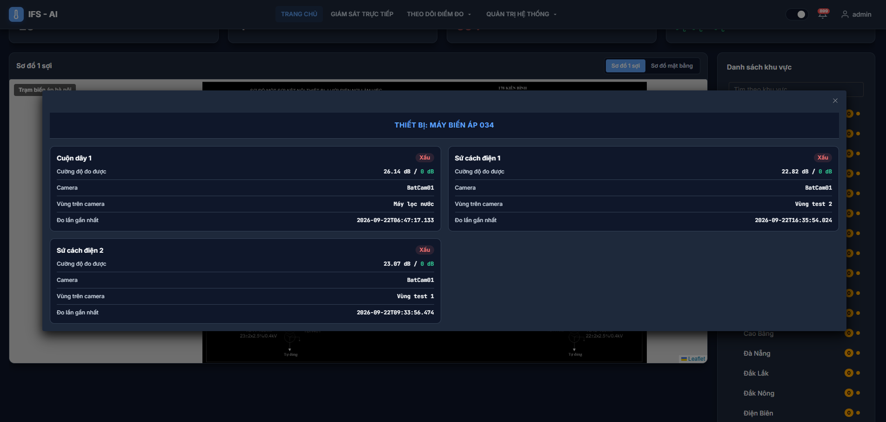
Sơ đồ mặt bằng
Sau khi mở sơ đồ 1 sợi, người dùng có thể nhấp vào nút "Sơ đồ mặt bằng" ngay bên cạnh để chuyển sang giao diện mô phỏng 3D toàn cảnh của trạm. Hệ thống sẽ hiển thị mô hình 3D toàn trạm, cho phép tương tác trực tiếp: lăn chuột để phóng to/thu nhỏ và nhấn giữ kéo chuột để điều hướng, xem xét mọi vị trí trong trạm một cách dễ dàng.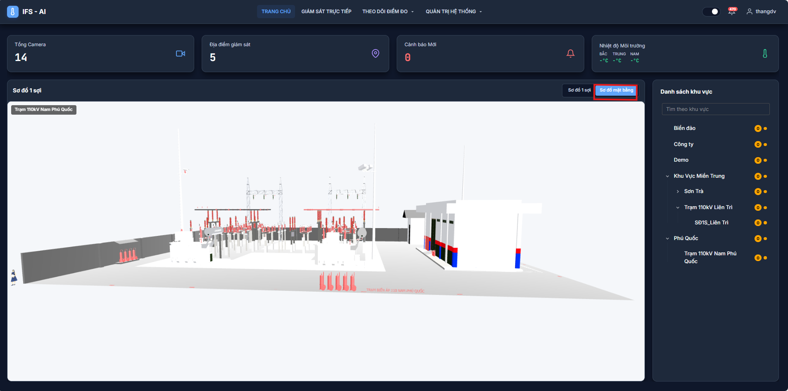
GIÁM SÁT TRỰC TIẾP
Màn hình giám sát trực tiếp
Trang này cho phép theo dõi luồng video trực tiếp từ tất cả các camera trong hệ thống, bao gồm cả camera thường và camera nhiệt. Phía bên trái là danh sách khu vực được phân tầng rõ ràng (như Biển đảo, Công ty, Khu vực miền Trung...).
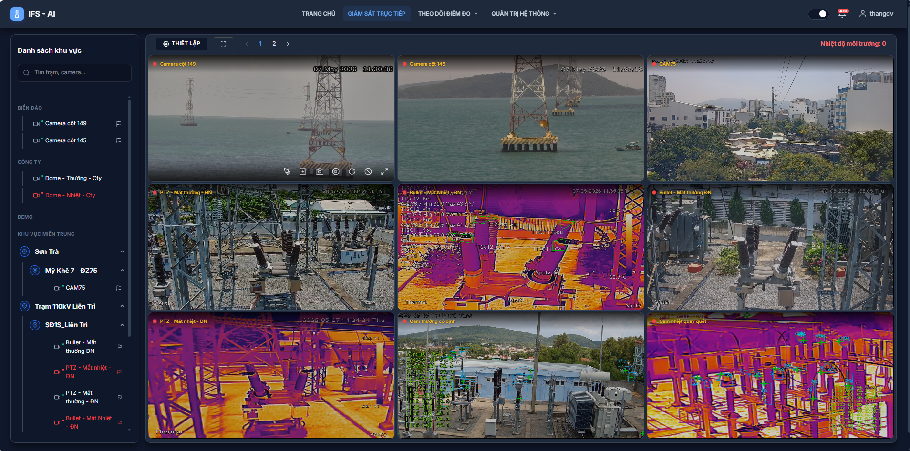
Người dùng có thể xem riêng 1 camera bằng cách nhấp vào tên camera có biểu tượng  đứng trước tên tương ứng trong danh sách.
đứng trước tên tương ứng trong danh sách.
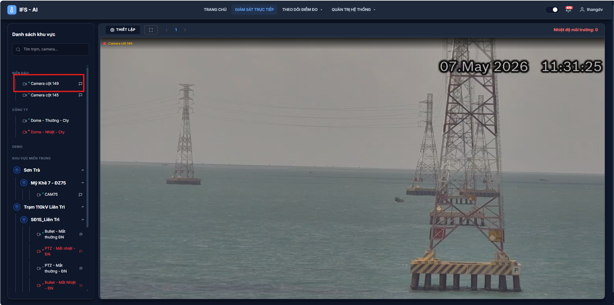
Nếu muốn xem tất cả các camera ở 1 khu vực nào đó thì nhấp tên khu vực, có biểu tượng là  đứng trước tên tương
ứng trên danh sách.
đứng trước tên tương
ứng trên danh sách.
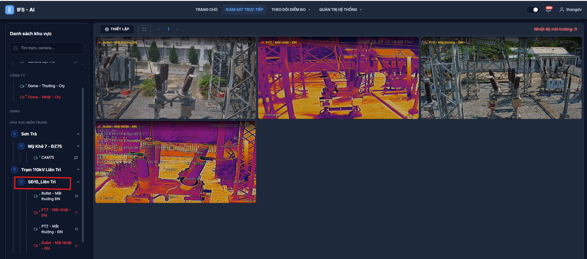
Phóng to toàn màn hình
Người dùng có thể nhấn vào biểu tượng phóng to ở góc bên cạnh chữ thiết lập
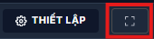
để xem tất cả camera trên màn hình ở chế độ fullscreen. Khi ở chế độ toàn màn hình, nhấn phím Esc để thoát và quay lại màn hình giám sát.
Thiết lập hiển thị
Người dùng nhấn vào nút để mở giao diện cấu hình hiển thị camera. Tại đây, có thể chọn số lượng camera hiển thị trên màn hình, thay đổi thứ tự sắp xếp và ghim các camera quan trọng để tiện theo dõi.
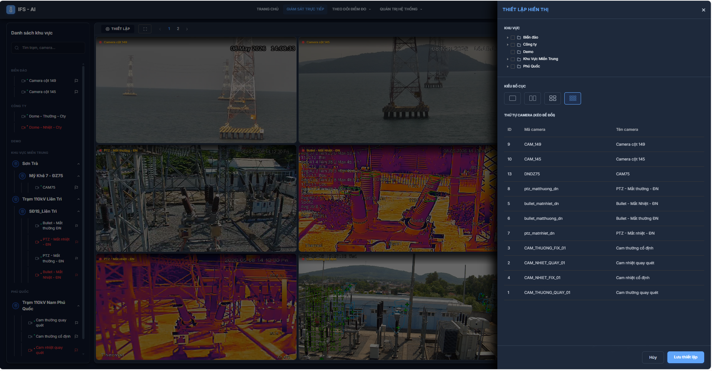
Để ghim camera, người dùng chọn checkbox bên cạnh tên camera trong danh sách khu vực. Camera được chọn sẽ được thêm vào danh sách ghim.
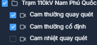
Để thay đổi bố cục hiển thị, người dùng chọn một trong các ô bên dưới. Các tùy chọn lần lượt tương ứng với
chế độ hiển thị 1, 2, 4 hoặc 9 camera.

Khi cần thay đổi thứ tự các camera đã ghim, người dùng giữ chuột vào dòng camera muốn di chuyển trong danh sách ghim, sau đó kéo thả đến vị trí mong muốn.
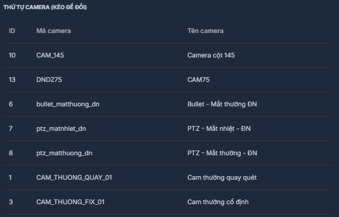
Khi thiết lập xong thì nhấn vào nút
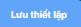
để lưu các thay đổi hoặc nút để hủy bỏ
các thay đổi.
để hủy bỏ
các thay đổi.
Các chức năng của camera
Để sử dụng các chức năng của camera, người dùng có thể di chuột vào khung video của camera đó, các biểu tượng chức năng sẽ hiện ra ở góc dưới bên phải của khung video.
Lưu ý : Một số chức năng đang phát triển nên khi nhấn vào sẽ không hoạt động.
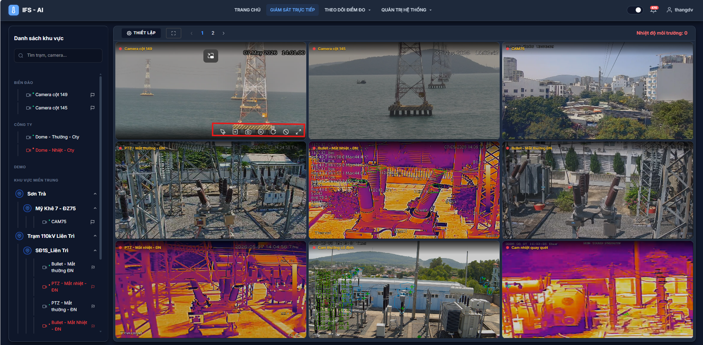
Để điều khiển PTZ, người dùng nhấn vào biểu tượng
 trên khung camera. Hệ thống sẽ mở giao diện điều khiển riêng, cho phép sử dụng các chức năng ptz của camera
đã
chọn.
trên khung camera. Hệ thống sẽ mở giao diện điều khiển riêng, cho phép sử dụng các chức năng ptz của camera
đã
chọn.
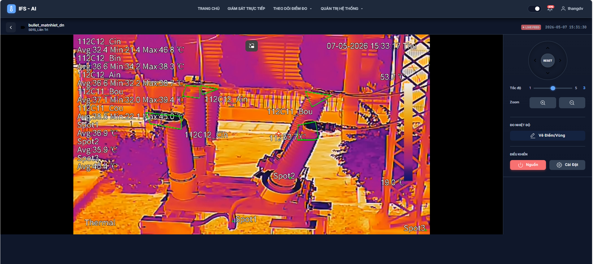

Chức năng này cho phép người dùng điều khiển camera xoay 360 độ để thay đổi góc quan sát. Người dùng chỉ cần di chuyển chuột đến hướng muốn quan sát và nhấn vào khu vực đó để camera tự động xoay theo hướng tương ứng. Nút reset sẽ đưa camera về vị trí ban đầu đã được cấu hình sẵn.

Thanh tốc độ dùng để điều chỉnh mức độ di chuyển của camera PTZ. Người dùng có thể giảm tốc độ khi cần quan sát chi tiết hoặc tăng tốc độ khi muốn xoay camera nhanh hơn trong quá trình điều khiển thủ công, tuần tra hoặc preset.
Phóng to/thu nhỏ hình ảnh: nhấn
 để phóng to hoặc
để thu nhỏ khung hình theo nhu cầu quan sát.
để phóng to hoặc
để thu nhỏ khung hình theo nhu cầu quan sát.
Vẽ điểm/vùng đo nhiệt: nhấn
 rồi chấm các điểm trực tiếp trên khung video
để tạo vùng đo.
rồi chấm các điểm trực tiếp trên khung video
để tạo vùng đo.
Sau khi vẽ xong, nhấn  để hệ thống đo nhiệt độ trong
vùng đã chọn. Khi đo nhiệt độ xong rồi thì ở dưới nút đo sẽ hiển thị 3 kết quả là nhiệt độ cao nhất, nhiệt
độ thấp nhất và nhiệt độ trung bình. Nếu vùng vẽ chưa hợp lệ, hệ thống thông báo "không phải hình đa giác
lồi, vui lòng vẽ lại!".
để hệ thống đo nhiệt độ trong
vùng đã chọn. Khi đo nhiệt độ xong rồi thì ở dưới nút đo sẽ hiển thị 3 kết quả là nhiệt độ cao nhất, nhiệt
độ thấp nhất và nhiệt độ trung bình. Nếu vùng vẽ chưa hợp lệ, hệ thống thông báo "không phải hình đa giác
lồi, vui lòng vẽ lại!".
Để hủy thao tác hiện tại và vẽ vùng mới, nhấn
 rồi thực hiện lại từ đầu.
rồi thực hiện lại từ đầu.
Lưu ý: Những camera nào không hỗ trợ chức năng này thì khi vẽ vùng xong sẽ không đo được.
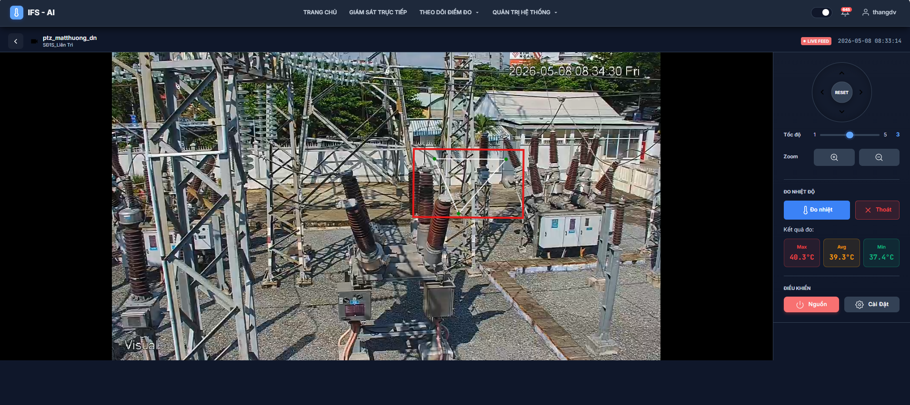
Cảnh báo AI
Danh sách cảnh báo AI
Trang này là trung tâm lưu trữ các sự kiện đã được thiết lập cho hệ thống AI nhận diện. Người dùng có thể nhanh chóng tra cứu lịch sử thông qua bộ lọc thông minh theo thời gian, khu vực, tên camera hoặc loại cảnh báo cụ thể (như phát hiện tàu thuyền, người, khói, xe máy,...).
Mọi cảnh báo đều được hiển thị chi tiết dưới dạng danh sách, bao gồm hình ảnh chụp từ hiện trường, thời gian chính xác và vị trí xảy ra sự kiện. Ngoài ra, giao diện còn hỗ trợ linh hoạt các chế độ hiển thị (dạng lưới hoặc danh sách) cùng tính năng phân trang.
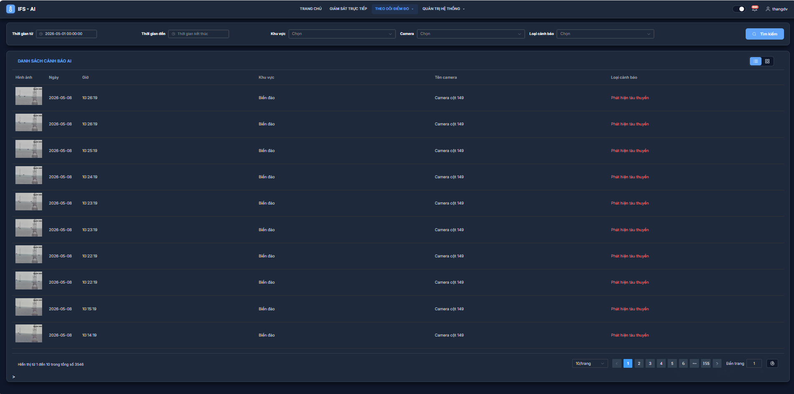
Để chuyển sang danh sách dạng lưới thì chỉ cần nhấn vào nút grid 
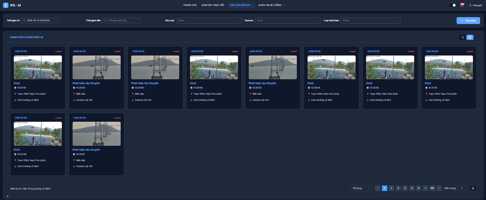
Muốn phóng to hình ảnh cảnh báo, người dùng nhấn vào ảnh tương ứng ở cột Hình ảnh trong danh sách còn khi ở trạng thái lưới thì chỉ cần ảnh tương ứng ở trong ô .

Người dùng nếu muốn chỉnh danh sách cột thì chỉ cần nhấn vào nút rồi chọn cột nào muốn ẩn đi hoặc hiện trên danh sách rồi ấn lưu để xác nhận hoặc hủy nếu muốn thoát.

Nếu người dùng muốn chỉnh số dòng trên 1 trang như là 20, 30, 100 dòng thì chỉ cần nhấn nút  rồi chọn số dòng muốn
hiển thị trên mỗi trang.
rồi chọn số dòng muốn
hiển thị trên mỗi trang.

Tìm kiếm
Người dùng chọn khoảng thời gian cần tra cứu tại ô "Thời gian từ" và "Thời gian đến". Sau đó chọn thêm khu vực, camera và loại cảnh báo từ danh sách thả xuống nếu cần, rồi nhấn nút

Nhiệt độ vượt ngưỡng
Danh sách Nhiệt độ vượt ngưỡng
Trang quản lý "Nhiệt độ vượt ngưỡng" tập trung lưu trữ mọi dữ liệu cảnh báo khi hệ thống phát hiện sự cố quá nhiệt. Thông qua bảng thống kê chi tiết, người dùng có thể theo dõi hình ảnh nhiệt thực tế với các chỉ số quan trọng như độ chênh lệch so với pha min hoặc pha min toàn trạm. Bộ lọc tại đây hỗ trợ truy xuất nhanh lịch sử theo thời gian và thiết bị, kết hợp cùng tính năng "Xuất file" giúp tối ưu hóa công tác báo cáo. Đặc biệt, việc theo dõi trạng thái và thời gian xử lý tại mỗi dòng bản ghi đảm bảo mọi sự cố đều được kiểm soát chặt chẽ, không bị bỏ sót..

Để chuyển sang danh sách dạng lưới thì chỉ cần nhấn vào nút grid

Muốn phóng to hình ảnh cảnh báo, người dùng nhấn vào ảnh tương ứng ở cột Hình ảnh trong danh sách.

Người dùng nếu muốn chỉnh danh sách cột thì chỉ cần nhấn vào nút rồi chọn cột nào muốn ẩn đi hoặc hiện trên danh sách rồi ấn lưu để xác nhận hoặc hủy nếu muốn thoát.

Nếu người dùng muốn chỉnh số dòng trên 1 trang như là 20, 30, 100 dòng thì chỉ cần nhấn nút rồi chọn số dòng muốn
hiển thị trên mỗi trang.

Xử lý cảnh báo
Khi đã xử lý xong sự cố, người dùng có thể xác nhận lại trạng thái bằng cách nhấn vào nút tích
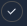
.Ta có thể xem chi tiết cảnh báo đó bằng cách nhấn nút , ở đây ta có thể nhập các thông tin ở ô nhân viên xử lý, ghi chú cảnh báo và chọn trạng thái cho cảnh báo này. Khi nhập xong thì chọn nút để lưu lại.

Chúng ta còn có thể xem chi tiết cảnh báo bằng cách nhấn vào nút
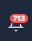
, ở dưới nút sẽ xuất hiện danh sách các cảnh báo mới nhất. Ấn vào dòng bất kỳ sẽ hiển thị giao diện mới về chi tiết cảnh báo đó. Ở đây ta cũng có thể nhập các thông tin ở ô nhân viên xử lý, ghi chú cảnh báo và chọn trạng thái cho cảnh báo này. Khi nhập xong thì cuộn xuống dưới cùng rồi chọn nút để lưu lại.
Tìm kiếm và xuất file
Người dùng chọn khoảng thời gian cần tra cứu tại ô "Thời gian từ" và "Thời gian đến". Sau đó chọn thêm khu vực, thiết bị từ danh sách thả xuống nếu cần, rồi nhấn nút

Để xuất file thì nhấn vào nút hệ thống sẽ xuất ra file excel danh sách các cảnh báo vượt ngưỡng theo bộ lọc đã chọn.
Nhật ký nhiệt độ
Nhật ký nhiệt độ
Trang Nhật ký nhiệt độ cung cấp toàn bộ lịch sử đo đạc của hệ thống. Trang này thực hiện các đối chiếu giữa nhiệt độ thực tế với các thông số môi trường, pha min và pha min toàn trạm nhằm phát hiện sớm các biến động bất thường qua đánh giá trạng thái. Thông qua việc kết hợp bộ lọc tìm kiếm nâng cao và công cụ xuất dữ liệu, người dùng dễ dàng trích xuất báo cáo phục vụ công tác phân tích, đánh giá hiệu quả vận hành định kỳ..

Để chuyển sang danh sách dạng lưới thì chỉ cần nhấn vào nút grid

Người dùng nếu muốn chỉnh danh sách cột thì chỉ cần nhấn vào nút rồi chọn cột nào muốn ẩn đi hoặc hiện trên danh sách rồi ấn lưu để xác nhận hoặc hủy nếu muốn thoát.
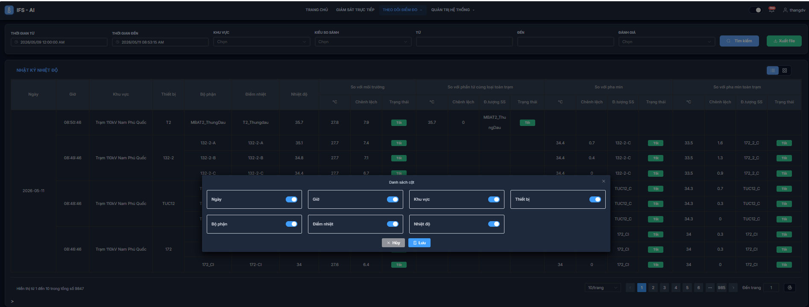
Nếu người dùng muốn chỉnh số dòng trên 1 trang như là 20, 30, 100 dòng thì chỉ cần nhấn nút rồi chọn số dòng muốn
hiển thị trên mỗi trang.

Tìm kiếm và xuất file
Người dùng chọn khoảng thời gian cần tra cứu tại ô "Thời gian từ" và "Thời gian đến". Sau đó có thể chọn thêm khu vực, kiểu so sánh và đánh giá từ danh sách thả xuống. Hai ô "Từ" và "Đến" dùng để nhập khoảng chênh lệch nhiệt độ cần lọc, các ô này chỉ cho phép nhập số và chỉ lọc được sau khi đã chọn kiểu so sánh. Khi hoàn tất bộ lọc, nhấn nút

Để xuất file thì nhấn vào nút hệ thống sẽ xuất ra file excel danh sách nhật ký nhiệt độ theo bộ lọc đã chọn.
Tổng hợp phân tích
Nhật ký nhiệt độ theo điểm đo
Trang Nhật ký nhiệt độ theo điểm đo tích hợp biểu đồ miền (Area Chart) nhiều lớp giúp trực quan hóa dữ liệu nhiệt độ của các pha và môi trường theo thời gian. Điểm ưu việt của biểu đồ này nằm ở tính năng tương tác trực tiếp: khi người dùng di chuột đến bất kỳ thời điểm nào trên biểu đồ, hệ thống sẽ hiển thị bảng thông tin chi tiết về giá trị nhiệt độ tại đúng thời điểm đó. Cơ chế này hỗ trợ việc đối soát thông số chính xác giữa các đối tượng đo, phục vụ công tác giám sát và phát hiện nhanh các biến động bất thường.

Bộ lọc
Để lọc dữ liệu theo nhiệt độ, người dùng nhấn vào ô "Trung bình" bên cạnh bộ lọc. Danh sách tùy chọn sẽ hiển thị các kiểu nhiệt độ cần xem, gồm nhiệt độ max, min và trung bình.

Người dùng có thể lọc chi tiết hơn bằng cách nhấn nút  để mở bảng lọc theo khu vực,
thiết bị, bộ phận và thời gian.
để mở bảng lọc theo khu vực,
thiết bị, bộ phận và thời gian.
Trước tiên, chọn khu vực cần lọc. Danh sách thiết bị sẽ tự động cập nhật theo khu vực đã chọn. Sau khi chọn thiết bị, danh sách bộ phận sẽ cập nhật theo thiết bị tương ứng. Tiếp tục chọn bộ phận để hệ thống hiển thị các điểm giám sát liên quan. Người dùng cũng có thể bật hoặc tắt hiển thị nhiệt độ trên biểu đồ. Cuối cùng, chọn khoảng thời gian cần lọc. .
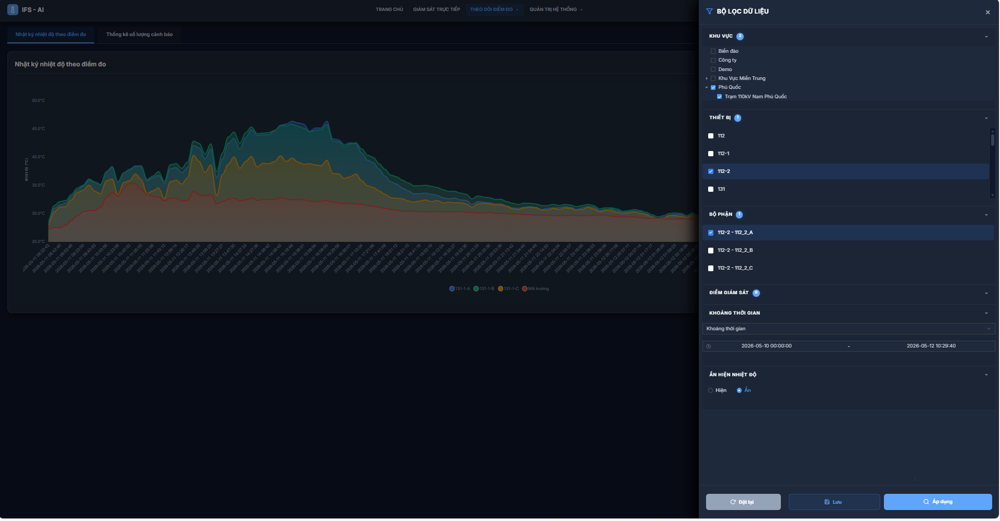
Sau khi đã chọn đầy đủ điều kiện, nhấn nút rồi chọn để áp dụng bộ lọc. Nếu muốn đặt lại về trạng
thái ban đầu, nhấn nút 
Thống kê số lượng cảnh báo
Để chuyển sang trang này, người dùng cần nhấn vào nút "Thống kê số lượng cảnh báo" bên cạnh chữ "Nhật ký nhiệt độ theo điểm đo" trên thanh điều hướng. Trang Thống kê số lượng cảnh báo sử dụng biểu đồ cột (Column Chart) nhằm tổng hợp tần suất xuất hiện các sự cố theo từng ngày. Tính năng này hỗ trợ người dùng theo dõi trực quan sự biến động về số lượng cảnh báo thông qua bộ lọc khu vực và khoảng thời gian tùy chỉnh. Đặc biệt, khi tương tác bằng cách di chuột vào từng cột, hệ thống sẽ hiển thị chính xác tổng số cảnh báo của ngày đó qua bảng chú giải nhanh (tooltip).
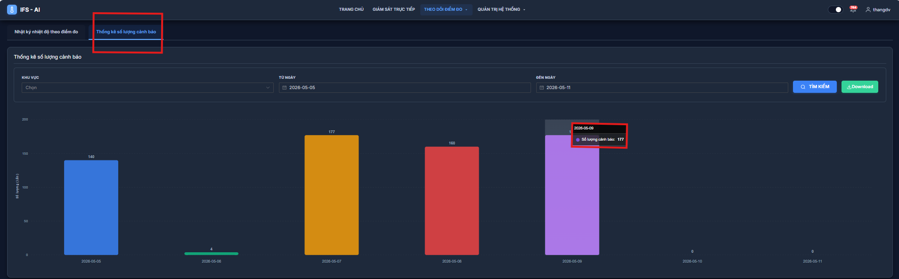
Tìm kiếm và download
Người dùng chọn khoảng thời gian cần tra cứu tại ô "Thời gian từ" và "Thời gian đến". Sau đó có thể chọn thêm khu vực. Khi hoàn tất bộ lọc, nhấn nút

Người dùng có thể xuất dữ liệu biểu đồ ra file excel để phục vụ công tác báo cáo và phân tích sâu hơn. Để thực hiện, nhấn vào nút
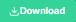
hệ thống sẽ xuất ra file excel theo bộ lọc đã chọn.Phóng điện vượt ngưỡng
Danh sách phóng điện vượt ngưỡng
Trang này lưu trữ toàn bộ cảnh báo được sinh ra khi cường độ phóng điện (dB) hoặc tốc độ tăng ΔPD%/kỳ của một bộ phận vượt ngưỡng đã cấu hình. Danh sách hiển thị Khu vực, Camera, Vùng trên camera, Thiết bị, Bộ phận, Cường độ PĐ, Kiểu cảnh báo, Đánh giá và Trạng thái xử lý.
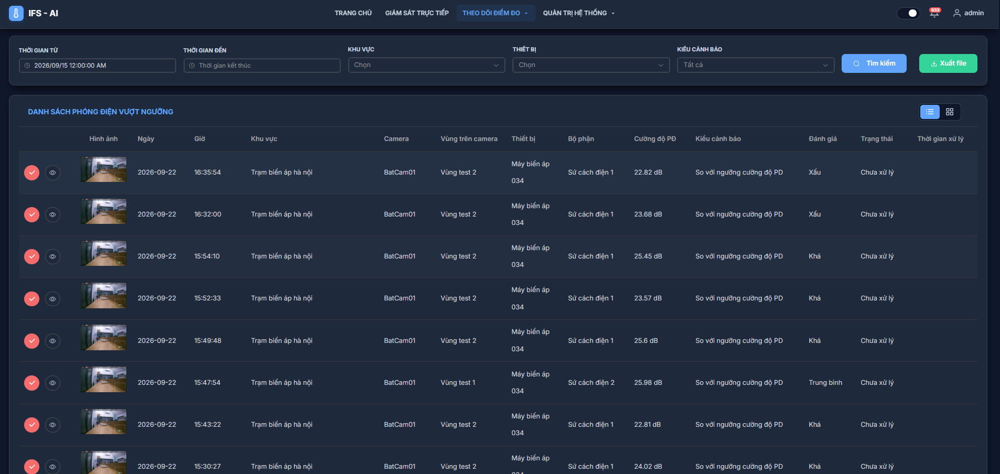
Để chuyển sang danh sách dạng lưới thì chỉ cần nhấn vào nút grid .
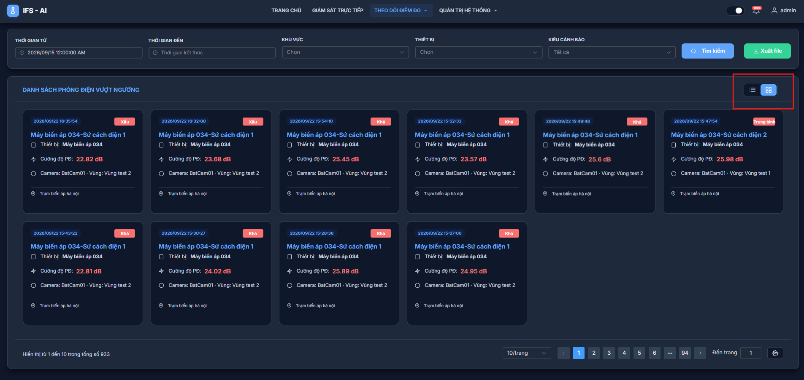
Người dùng nếu muốn chỉnh danh sách cột thì chỉ cần nhấn vào nút rồi chọn cột nào muốn ẩn đi hoặc hiện trên danh sách rồi ấn lưu để xác nhận hoặc hủy nếu muốn thoát.
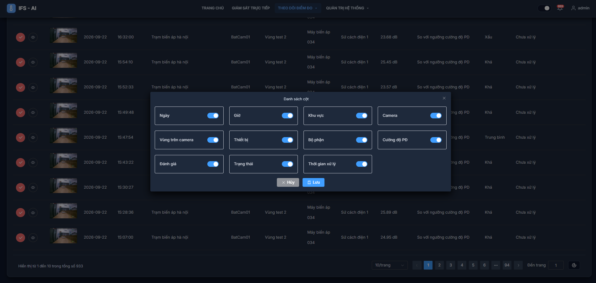
Xem chi tiết và xử lý cảnh báo
Nhấn vào nút ở đầu mỗi dòng để mở trang chi tiết cảnh báo: ảnh chụp/video sự kiện, vị trí & thiết bị, cường độ đo được, ngưỡng cường độ PD (dB) đang áp dụng cho bộ phận và biểu đồ xu hướng cường độ của những lần đo gần nhất. Tại đây cũng có thể cập nhật trạng thái xử lý hoặc tải video sự kiện.
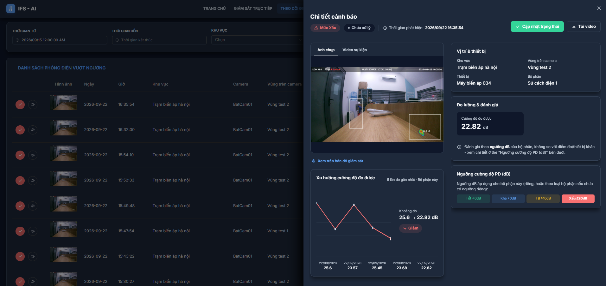
Ngoài ra có thể nhấn nút ở góc trên bên phải để xem nhanh các cảnh báo phóng điện mới nhất mà không cần rời trang.
Tìm kiếm
Chọn khoảng thời gian tại ô "Thời gian từ"/"Thời gian đến", có thể lọc thêm theo Khu vực, Thiết bị, Kiểu cảnh báo rồi nhấn nút . Nhấn nút để xuất danh sách ra file excel theo bộ lọc đã chọn.
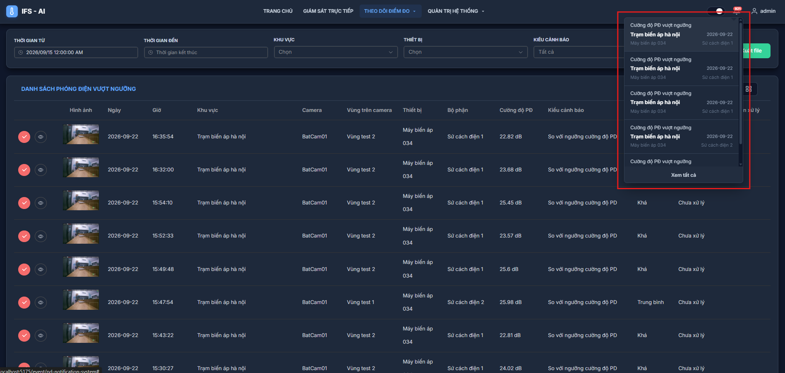
Nhật ký phóng điện
Nhật ký phóng điện
Trang Nhật ký phóng điện lưu lại toàn bộ lần đọc dữ liệu PD, kể cả những lần chưa vượt ngưỡng để cảnh báo. Mỗi dòng gồm Camera, Vùng trên camera, Thiết bị, Bộ phận, Kiểu cảnh báo, Công thức áp dụng, Cường độ PĐ, Mức tham chiếu, Chênh lệch và Đánh giá - giúp đối chiếu lại toàn bộ diễn biến của một bộ phận theo thời gian.
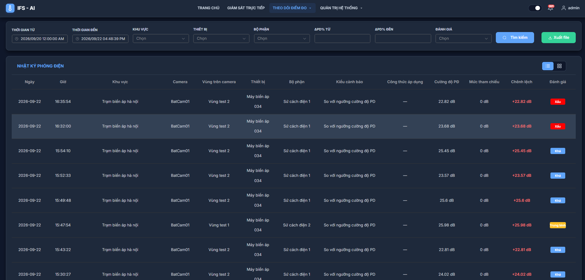
Tìm kiếm và xuất file
Chọn "Thời gian từ"/"Thời gian đến", lọc thêm theo Khu vực, Thiết bị, Bộ phận, khoảng ΔPD% (Từ/Đến) hoặc Đánh giá rồi nhấn nút . Có thể chuyển qua lại giữa hiển thị dạng danh sách hoặc dạng lưới bằng 2 nút ở góc phải bảng, và nhấn để xuất file excel theo bộ lọc đã chọn.
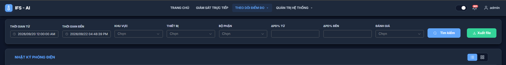
Tổng hợp phóng điện
Thống kê phóng điện vượt ngưỡng
Chọn "Khu vực" và khoảng "Từ ngày"/"Đến ngày" rồi nhấn để lọc dữ liệu; nhấn nút để tải dữ liệu thống kê ra file excel.
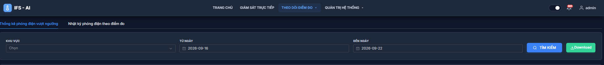
Trang hiển thị biểu đồ số lượng cảnh báo theo khu vực, biểu đồ tròn phân bố tình trạng cảnh báo (Tốt/ Khá/Trung bình/Xấu) và bảng "Top bộ phận có mức PD đo được cao nhất" để nhanh chóng xác định các bộ phận cần chú ý.
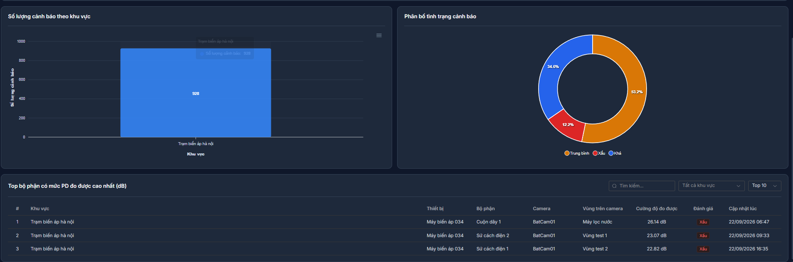
Phía dưới còn có các chỉ số tỷ lệ xử lý cảnh báo (Tổng số, Chưa xử lý, Đã xử lý, Thời gian xử lý trung bình) cùng biểu đồ số lượng cảnh báo theo từng ngày trong khoảng thời gian đã chọn.
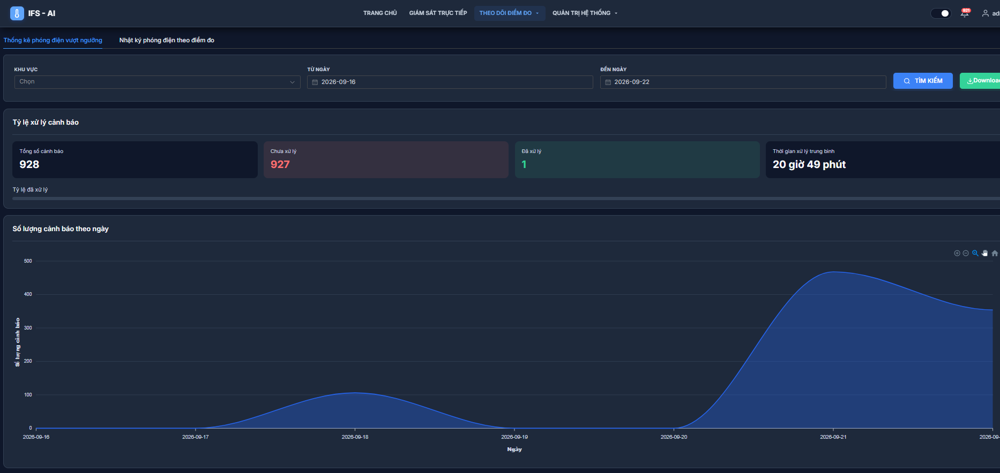
Nhật ký phóng điện theo điểm đo
Chuyển sang tab "Nhật ký phóng điện theo điểm đo" để xem biểu đồ miền (Area Chart) nhiều lớp thể hiện cường độ PD (dB) của từng bộ phận theo thời gian. Di chuột vào bất kỳ thời điểm nào trên biểu đồ, hệ thống sẽ hiển thị bảng giá trị dB của tất cả các bộ phận tại đúng thời điểm đó, hỗ trợ đối chiếu nhanh giữa các bộ phận trong cùng khu vực.
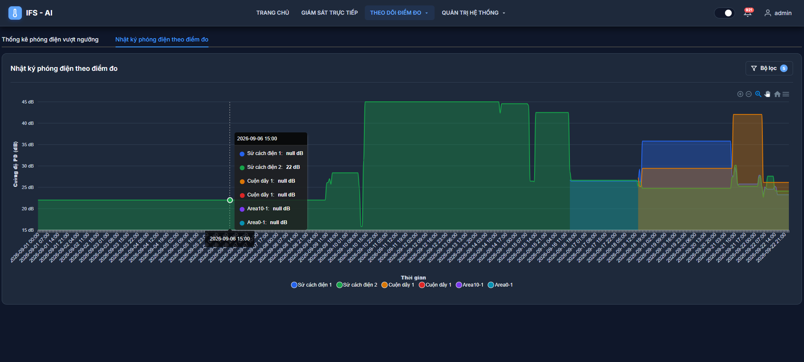